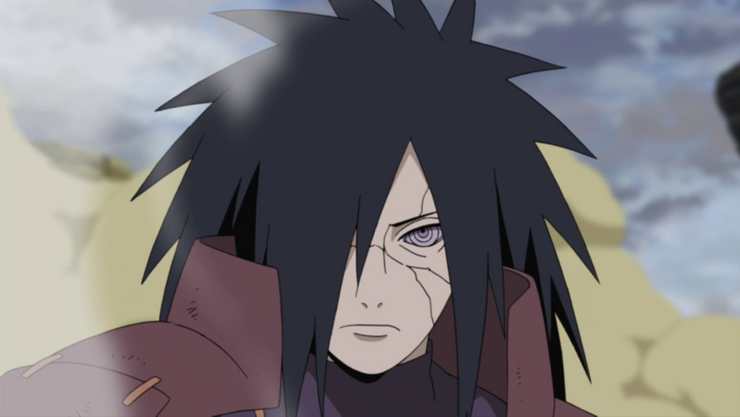
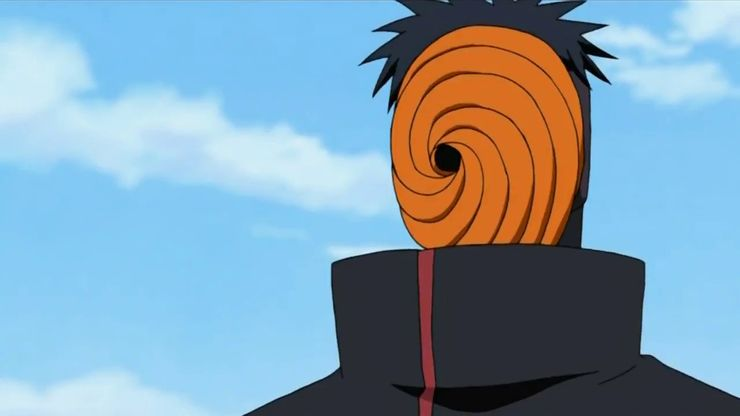
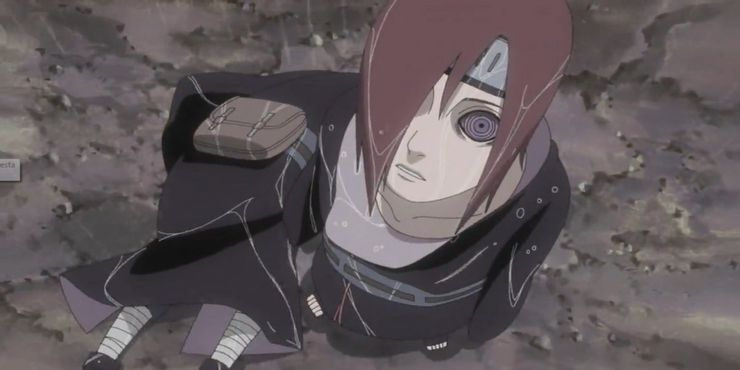
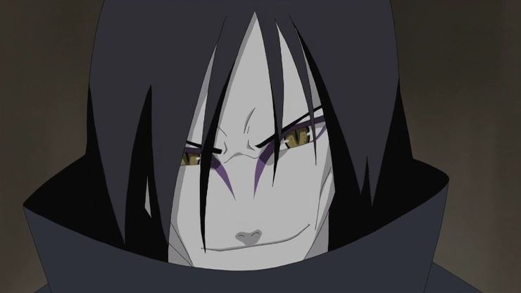
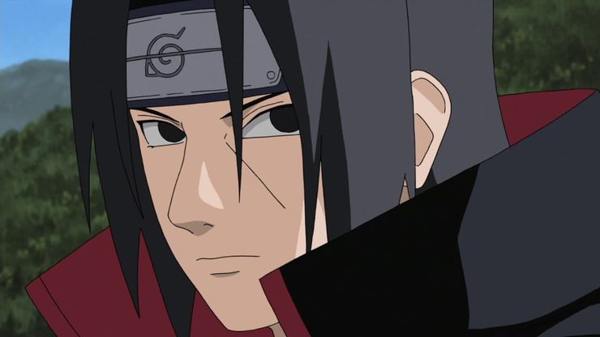

AKATSUKI

Akatsuki (暁, literally meaning: "Dawn" or "Daybreak") was a group of shinobi that existed outside the usual system of hidden villages. Over the course of several decades, Akatsuki took different forms and was led by different individuals. Though each iteration is viewed as either subversives or criminals, all seek to make the world a better place through their own means. Each Akatsuki tended to have multiple lairs across the world, inaccessible either due to their remoteness or the various security measures that protected them.
Madara Uchiha

Madara Uchiha, the man who laid the groundwork for the Akatsuki and manipulated the organization from behind the curtain, grew to possess all of Obito’s powers, but to a much higher degree. He could combine the Sharingan and Rinnegan to form the Rinne Sharingan and was actually able to defeat the entire Allied Shinobi Forces, as well as stave off the efforts of Naruto and Sasuke working together to defeat him.
His only mistake was allowing Black Zetsu to influence his decisions, as his all-powerful form allowed the goddess Kaguya to possess and remodel his body in her image. Madara is undoubtedly the strongest member of the Akatsuki and perhaps the most powerful character in the series in a one on one fight
Obito Uchiha

Obito Uchiha, or Tobi when he was hiding his identity from the other members of the Akatsuki organization, possesses the Sharingan, the Rinnegan, and the power of the Ten-Tails. This gives him a myriad of abilities including intangibility, mastery over the six elements of chakra, access to all of Nagato’s abilities, and the ability to destroy nearly anything with the Truth-Seeking Balls technique.
While he only possesses this form for a short time, it takes the entirety of the Allied Shinobi Forces to stop him in this state. He was nearly invincible and if not for the efforts of a thousands-strong army and the scheming of Madara, he would have been unstoppable.
Nagato

Blessed with the legendary Rinnegan that Madara spent decades creating, Nagato took on the name Pain when he turned the Akatsuki into a villainous organization. With the goal of ruling over mankind as a means be the focus of the world’s hatred, he used his Rinnegan to control six corpses that each had unique abilities.
On top of mastering each elemental transformation, Nagato could also destroy entire cities instantly by creating a massive force. He literally possessed the might of an entire army and was only stopped by Naruto’s use of Sage Mode and the Nine-Tailed Demon Fox’s chakra. Nagato was able to command the strongest iteration of the Akatsuki because he was strong than most of them.
Orochimaru

Orochimaru is both one of the most self-interested characters in Naruto, and one of the strongest. One of the legendary Sannin and a member of the Akatsuki when it suited his interests, Orochimaru has fought some of the strongest characters in the series and lived to learn from those battles. His body is heavily modified and he is now in the possession of countless unique abilities after absorbing other’s bodies into his own.
He possesses more knowledge of ninjutsu than any other character in the series and is implied to have more techniques in his repertoire than is humanly possible. Only someone with an inhuman level of power is able to come close to matching Orochimaru when he’s at his peak condition and motivated enough to put his all into a fight.
Itachi Uchiha

Itachi Uchiha is perhaps the most skilled ninjutsu and genjutsu user in the entirety of Naruto, and secretly spies on the Akatsuki while acting as a member of the organization. He’s a master of the Sharingan's most advanced techniques, including the inextinguishable flames of Amaterasu, the illusions of Tsukuyomi, and the battling avatar Susanoo.
If not for his chronic illness, Itachi likely would have been the strongest living ninja during his time in the series. Few opponents can hope to match Itachi’s genius level intellect and the talent he’s refined into almost unmatched skill. Only those with even greater natural gifts or decades of training can hope to match Itachi’s devastating and multifaceted Sharingan abilities.